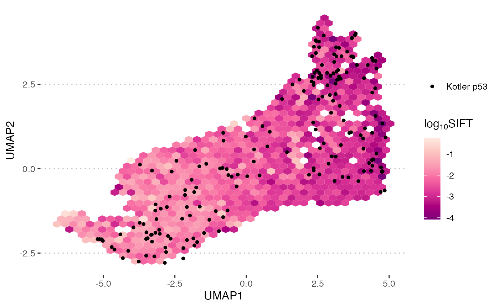
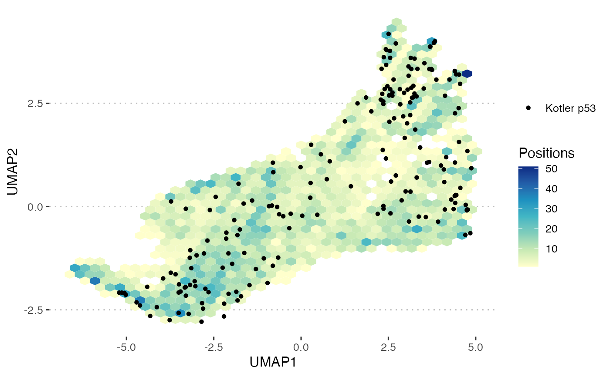
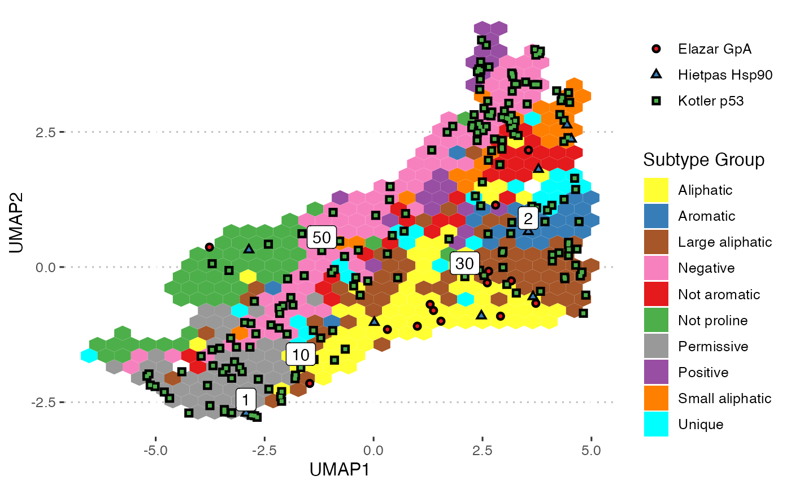

Project new data onto the deep mutational landscape derived from the combined data, viewed in UMAP space. This view allows you to determine if new data follows the expected distribution and compare it with the average properties for positions in the same regions of the landscape. This can give insights into the likely properties of positions in the new protein.
plot_landscape(x, feature = NULL, highlight = NULL)
Arguments
| x | |
|---|---|
| feature | String name of a feature to project onto the background landscape. This can be a numeric column from
the |
| highlight | Positions to label. This can be a vector for deep_mutational_scan objects with a single study or a named list of such vectors if multi_study == TRUE. |
Value
A ggplot2 plot.
Details
Points represent positions from the new protein(s), positioned based on predicted UMAP coordinates from the combined landscape model. These are plotted on top of the whole combined landscape, which is represented as grey points when no feature is used and coloured hexagonal bins when one is. These bins are coloured based on the mean value of the chosen feature for all points that fall within the hexagon for numerical landscape features. If the chosen feature is a FoldX Gibbs Free Energy prediction values are initially clamped to -5 <= x <= 5 because larger values lead to difficult to read scales and are generally thought to represent program quirks rather than real biology. There are also two special values for feature "count" and "cluster", which colour bins by the number of landscape positions and the most common cluster type, respectively.
The input data is annotated using annotate if it is not already, based on the annotated flag
for deep_mutational_scan objects and the presence of the required umap1/2 columns for data frames. It is
better to save the results of annotate if doing multiple downstream analyses because can be a relatively slow
operation.
Examples
#> Warning: deep_mutational_scan is not annotated. Annotating using annotate().#> NULL# Plot against spceial features plot_landscape(dms, feature = "count")plot_landscape(dms, feature = "cluster")# Plot multiple studies comb_dms <- bind_scans(deep_scans, annotate_missing = TRUE) plot_landscape(comb_dms, feature = "total_energy")# Highlight Positions highlight <- list(`Hietpas Hsp90`=c(1,2), `Kotler p53`=c(10, 30, 50)) plot_landscape(comb_dms, feature = "cluster", highlight = highlight)